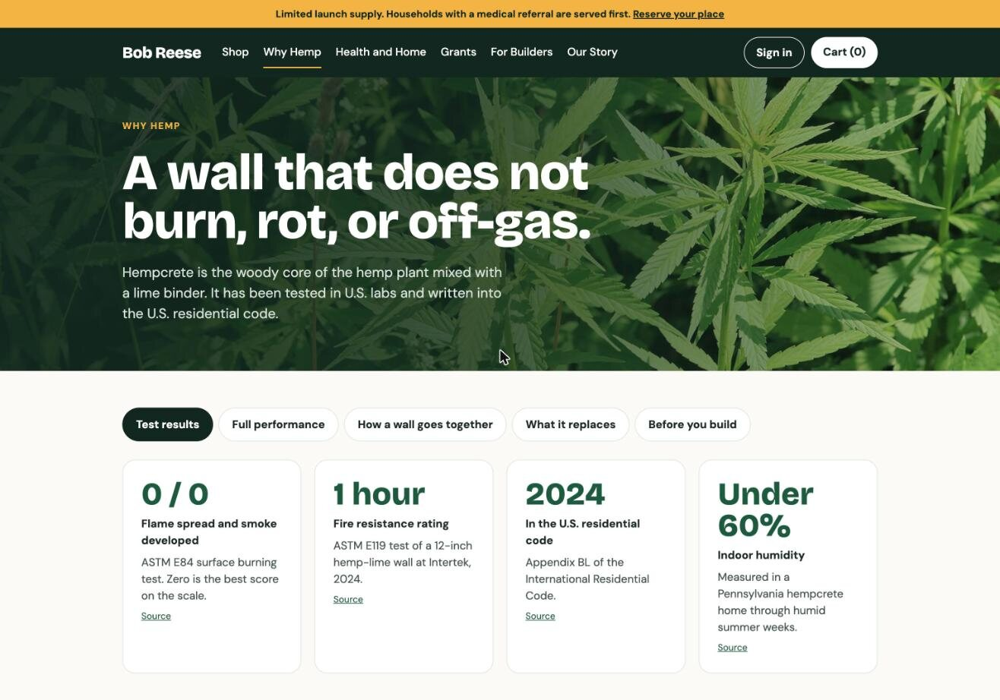
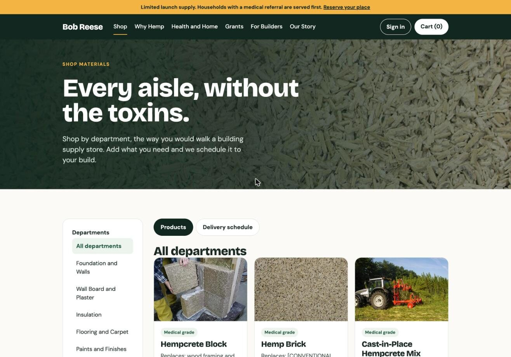
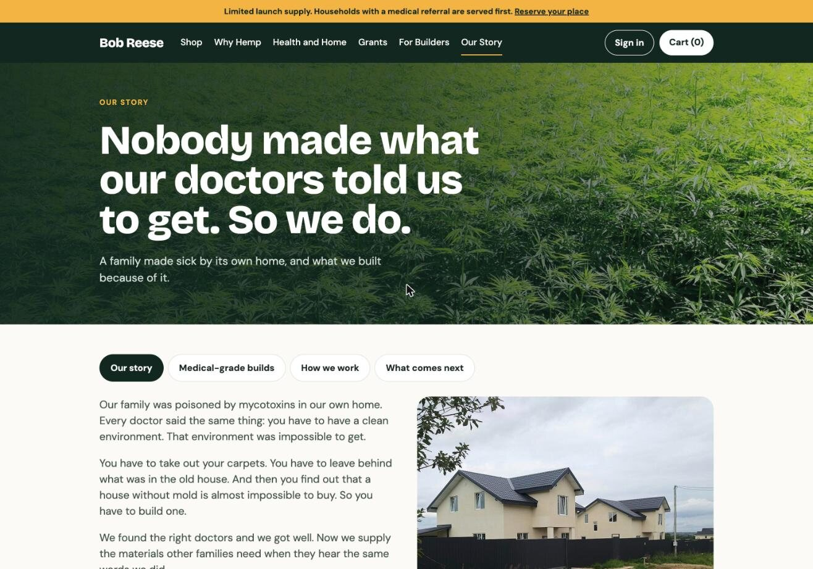

Bob Reese, non-toxic building supply
A full storefront for a non-toxic building materials supplier, taken from an outline to a live site.
Creative productionBuilt with AI
12pages
1person: design, build, deploy
FlatHTML, no framework
Pushto deploy
The problem
- A family made sick by its own home wanted to supply the materials other families need.
- They needed a site that explains the science and sells the product.
- It had to be simple enough to hand over.
What I did
- Outlined the site, wrote the structure and designed every page.
- Built a shop with departments, a cart and a delivery schedule.
- Added a grants checker by state and a sourced health page.
- Set up deploy-on-push to GitHub Pages behind a preview sign-in.
What changed
- Live on GitHub Pages.
- Every health claim links to its source.
- It deploys on every push.


